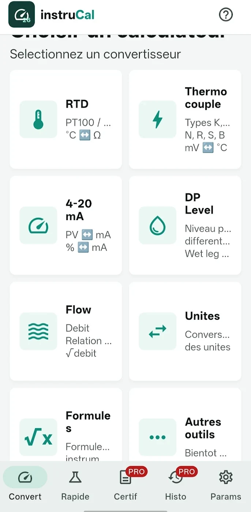
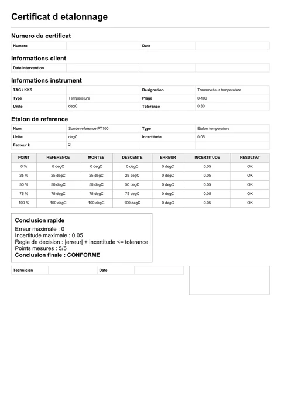
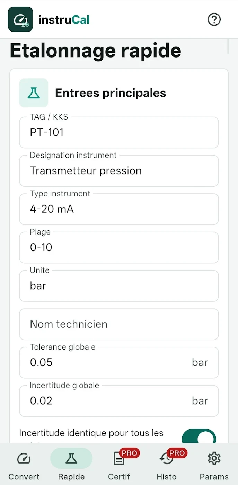
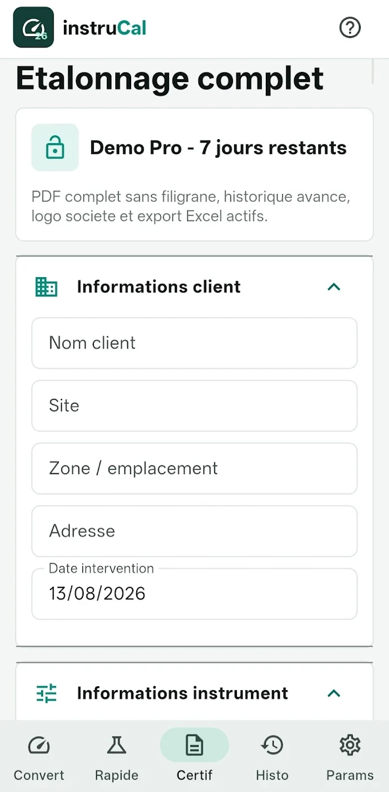
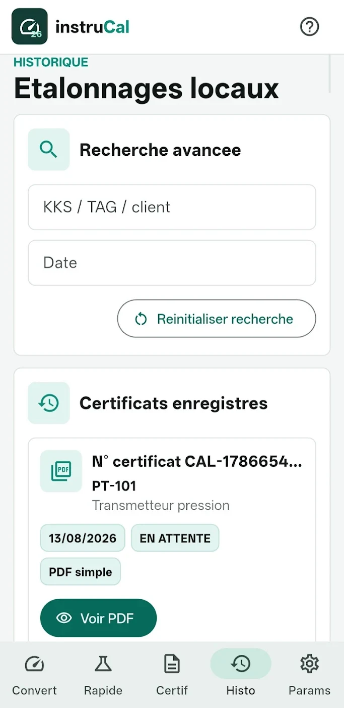
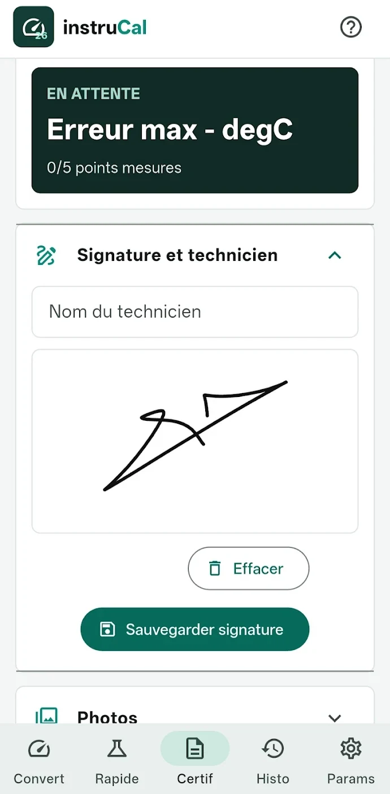
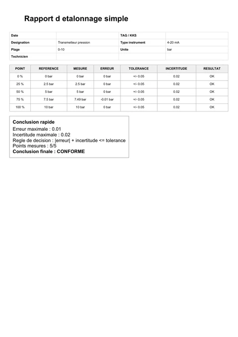
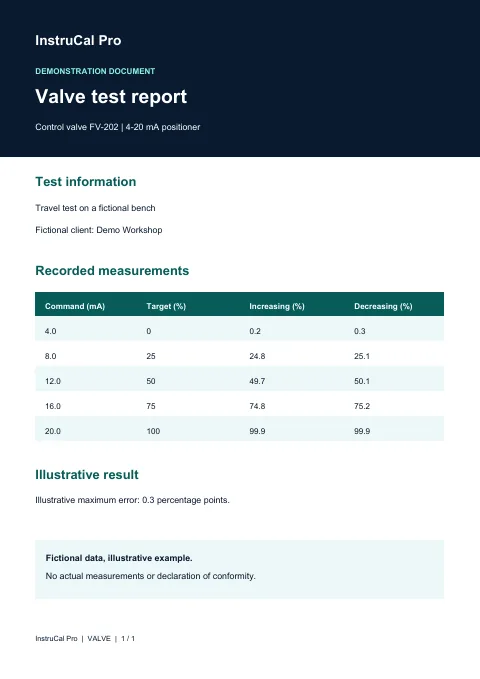
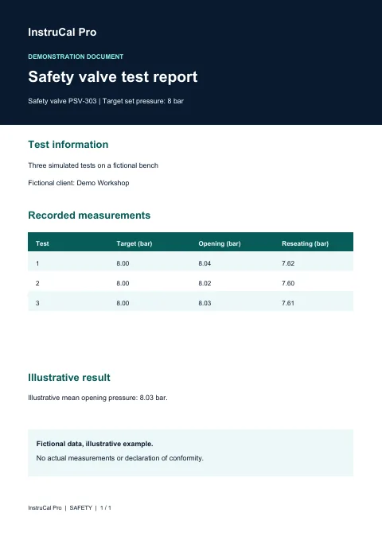

Check the reading
Convert 4–20 mA to a process value and compare field readings against a reference.
Industrial instrumentation · Android
Convert signals, document field tests and share PDF calibration certificates with an Android app built for industrial professionals.


App-generated PDF certificate (French)Convert 4–20 mA to a process value and compare field readings against a reference.
Keep readings, photos and a signature with the intervention record.
Find a certificate in local history and share its PDF with the customer or quality team.
For instrumentation technicians, metrology service providers, laboratories and maintenance teams.
Convert loop current to a process value and back. Use RTD/Pt100, thermocouple, pressure, temperature and flow tools.
Enter range and signal · convert · check expected reading
Free and Pro · unlimited
Explore on Google PlayEnter field readings, compare them with references and share a quick PDF.

Set the range · enter readings · generate the PDF
Free · 5 quick PDFs. Pro · unlimited.
Explore on Google PlayCombine customer, instrument and reference standard details with readings, errors and the conclusion. Share the PDF or export the data to Excel.

Record the reference · enter measurements · export
Free · 1 full certificate. Pro · unlimited with company logo.
Explore on Google PlayRecord valve travel at different command points. Document errors and retain the test report.
Select the valve · enter travel readings · share the report
Free · 1 complete test. Pro · unlimited.
Explore on Google PlayChange the setpoint and controller parameters to observe the simulated response and compare scenarios. Use the charts for diagnostics and training.
Configure a scenario · simulate · read the charts
Pro only
Explore on Google PlayRecord opening and reseating pressures and group repeated tests in one report.
Set the target pressure · enter test readings · generate the report
Free · 1 complete test. Pro · unlimited.
Explore on Google PlayFind interventions and certificates saved on the device. Open an instrument record using its QR code.

Open a record · retrieve a certificate · share it
Local history · creation limits depend on your plan
Explore on Google PlayAdd photos and a signature to the full certificate, open an instrument record via QR and share the resulting PDF.

Attach evidence · sign · preview the PDF
Free · subject to document limits. Pro · company logo on the full certificate.
Explore on Google PlayScreenshots come from the Google Play listing. Some screens may differ from the installed version.
Convert loop current to a process value and back. Use RTD/Pt100, thermocouple, pressure, temperature and flow tools.
An official screenshot is still needed for this module.
Explore two anonymised exports generated by InstruCal Pro and two illustrative reports.

InstruCal Pro export · PDF in French
4–20 mA pressure transmitter with readings, errors and tolerance.
InstruCal Pro export · PDF in French
Temperature transmitter, reference standard and increasing and decreasing readings.

Demonstration document
Control valve, command signal and measured travel.

Demonstration document
Opening and reseating pressures across three tests.
Get started for free. Check the Pro offer under “My Plan” in the app.
Free to install
Pricing shown in the app
Pro is purchased in the Android app through Google Play. The Google Play listing announces a 7-day trial. Check the offer and eligibility shown in the app before subscribing.
View the app on Google PlayThe public listing specifies Android 7.0 or later for version 1.1.0. The website also works on iPhone and desktop.
Converters and local quick calibrations are unlimited. Free includes 5 quick PDFs, 1 full certificate, 1 valve calibration and 1 safety valve test.
Open My Plan in the app to see the offer shown by Google Play. The listing announces a 7-day trial. Google Play shows eligibility, pricing and terms for your account before confirmation.
History is stored on the device. You can share PDFs and export full certificate data to Excel from the app.
The two anonymised exports show the app’s output. The valve and safety valve reports use fictional data. Any accreditation claim depends on the organisation performing the calibration and its accreditation scope.
Available on Android. Start with Free and check Pro in the app.